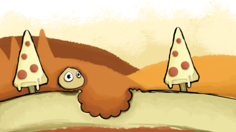

IXD301 - Little Wing - Pizza Game
Who are Little wing?
Little wing are a pizzeria situated in Northern Ireland. They are a small and Quirky franchise that create and serve traditional Naples style pizza, which has been made since 1839. Little Wing is owned by a larger company Beannchor, which is one of the largest independent owner/operators of bars, pubs, restaurants and nights clubs in Northern Ireland. Little Wing have a contemporary style that is scene throughout the restaurant, from their menus to their rustic style interior and furnishings. This contemporary and modern style reflects upon their staff, which have a friendly and relaxed approach.
The Game?
Little wing came to us to help design a game for their younger aged clientele, ages between 5 and 10. The game would be used so they would have something to do while waiting for their meal, also just to entice more customers and add something to the kids page on their new website as they are renewing it. Throughout this page you will see my process of creating this game and research.
Brain Storming
First thing in class was brainstorming in groups, this consisted of sketching and writing down anything that related to pizza on a piece of paper. This process helps take note of all relatable things to do with the topic. After noting down all the words and sketching, we had to pick three words from the brainstorm and create game concept. My group decided on creating an infinite runner game that consisted of a pizza deliveryman on a scooter, which collected pizza toppings and had to avoid collisions with cars. This game concept helped get the creative start on the process of figuring out what to do for the game.
Later on I created two of my own brainstorms, one on pizza and another on the company Little Wing. After I got down all the related topics and words, I combined the two brainstorms to try find an idea that fitted the company best for the game.
Related Games
There are a lot of games for kids and grown ups out there, all different styles, themes, difficulty, game play and the list goes on. I searched by game play styles; match-three puzzle game, maze puzzle game, flying game, sandbox game, infinite runner game and platform game
Match-three puzzle game - Candy Crush Saga
One of the match-three puzzle games that I came across was Candy Crush Saga, created by King. Candy crush is a widely used and known mobile game that consists of matching sweets to gain points, to do this you have to create a row of sweets that are of the same colour. You can also create special combinations by creating rows of 4 and 5 sweets, these create sweets that can gather you more points.
Match-three puzzle game - Bejeweled
Another one of the match-three puzzle games I cam across was Bejeweled. Bejeweled is one of the older versions of this game play style, it pretty much follows the same rules as Candy Crush Saga, only instead of using candy they use jewels to represent the points.
Maze puzzle game - Pac-Man
Pac-man is a widely known game that has been around since 1980, it was developed by Namco and first released in Japan. Pac-man was originally an arcade game but there are many versions seen now on smart phones, consoles and computers. Pac-man involves the player controlling Pac-man himself throughout a maze collecting dots to gather points to carry him onto the next stage. While Pac-Man is gathering points he is getting chased by enemies which he needs to avoid as if one of them catch him he will lose a life.
Maze puzzle game - Monument Valley
Monument Valley is a Puzzle game developed by Ustwo, an indie game studio. Monument Valley is quite different compared to Pac-Man, as the maze is an optical illusion, which you have to lead the princess character through. The game is viewed in an isometric view, which give a while different feel to the game, in comparison to many games out there.
Flying Game - Flappy Bird
A well-known smart phone flying game is Flappy Bird. This simplistic retro 8-bit style game was developed by Vietnam-based developer Nguyễn Hà Đông This game is a side-scroller style game in which you control a flying bird between rows of pipes without colliding into them. The bird is controlled by the user tapping the screen.
Sandbox Game - Minecraft
Sandbox Game - Terraria
Infinite Runner - Google Chrome Dino Game
Platform Game - Fancy Pants Adventure
User Personas
I had to come up with user personas for the game I was designing to try understand the age group I was designing this for and try understand their way of thinking. I created two versions of the user personas, one written and one visual.
Game ideas
After looking and researching at various game play styles and games I came up with four game ideas; flying pizza game (flying game), dough ball game(platform game), toppings game (match-three game) and pizza delivery game (infinite runner).
Flying pizza game
For the flying pizza game I thought it would related well to the company name, as it is ‘Little Wing’ so I thought creating a game that had a character that had wings would fit best. The game consists of a flying pizza that is making it’s journey through the sky, collecting points by catching floating toppings. The character also has to avoid passing objects during mid flight, such as clouds.
Dough ball game
The dough ball game concept is about the adventures of a dough ball through a pizza world. The character has to jump from one pizza slice to another, trying to avoid falling through the gaps. The character will also have to collect topping throughout the journey to gather points.
Toppings game
This game is the pizza version of Candy Crush Saga or Bejeweled. The game consists of matching pizza toppings to gain points. Points are generated by creating rows of matching toppings , special toppings that have various effects can be made by creating rows of 4 or 5, you can also mix special toppings together to create different effects, which will gather you more points.
Pizza deliveryMan Game
The final game idea is an infinite runner that consists of a deliveryman that have to deliver pizza to certain destinations. During his journey he has to avoid having collisions with cars by moving out of the way or jumping.
Game idea one
I chose two games out of my sketchbook to carry on with. The first game is a basic touch-to-jump style game, much like many games out there at the moment so it is easy to use and straight forward. The game is about the adventure of a little pizza dough ball in a pizza world, he has to collect toppings throughout this journey to gather points, also the further he gets the more points he collects. The game will end if he falls through one of the spaces of the platform.
After doing initial planning in my sketchbook I thought it would be best to move onto my Wacom graphics tablet to get more of an idea of what the character would look like and it’s surrounding landscape. I looked at various colours and thought to keep everything yellow/orange as I thought those colours would match a pizza best as the world the character was in was meant to be all related to pizza.
Looking back on my photoshop version I thought the game would be best played vertically as then the user wouldn’t have to rotate their device just to play the game. After researching various art styles I went for a more sketchy look to the game, such as thick sketchy lines and an overall slighty skewed look. I incorbrated the Little Wing pizza texture in the background just to keep instyle with the company throughout the game.
I tried to create depth within the game by layering a backdrop of trees and hills, which I thought made the character and platforms stand out more so it wouldn’t get lost amoungst the background.
pic
Game Idea Two and Final Idea
Game concept Two was my favourite out of the list of other games and was the game that I chose to go for as it suited the company better and the style fitted in with the brand guidlines. The second game was a flying pizza game much like many flying games out there at the moment. The user places their finger on the screen of their device and navigates the flying pizza to collect toppings that are floating in the sky. They will also have to avoid having collisions whilst doing so, as they are given the maximum of 3 lives. The pizza is flying by the use of wings, as I thought it would incorporate the name of the company.
pic
As in the previous game I have incorperated the Little Wing pizza texture into the background. I created an animation for the game as it loads in the background, this consisted of a small flying pizza collecting pepperoni in a circle. This gives the user some idea of what the game is about before actually playing the game. Once the screen has loaded it moves onto a start screen which has the character flying in the air with it’s wings flapping. I have used the colours that were given in the brand guide lines to keep the game consistant with Little Wing’s style and brand. I used the font Supernova as I thought it fitted best with the style of the restaurant. After clicking play, the character minimises in size and moves down to the bottom of the screen. Whilst the pizza is flying clouds and floating pepperoni slices make their way into the screen moving down towards the pizza, the pizza then has to avoid the clouds as it would lose a life if a collision is made, the character has a maximum of 3 lives. While in the air the flying pizza has to collect pepperoni to gain points to try reach a top score, the character will fly faster the longer it is in the air and more obsticals will appear such as birds.
The Name and Title style
For the title of the game I went through various styles, from vectorising my own hand written text to creating shapes. I was trying to keep the brands overall style within the title, so I thought rustic and friendly. I thought a banner would look great with this style with a slight sketchy look to it but not too much that it would take away from the text within it. I used the brown colour given within the brands guidelines which I continued to use throughout the game.
The Character
The initial character for the game was a tad bland and needed more stylised. I first brightened the colours and added lines to create light and depth to the pizza, I also added an overall brown line to incorperate the colour and just make the pizza stand out against the background. I also changed the wings to a less emphasized shape.
After fixing the previous illustration of the pizza, myself and my lecturers both thought that the pizza was a too detailed and stood out too much against the background, and that I should mix the both to get a better overall look. I added a sketchy line around the pizza and put on the wings of the first illustration as the wings on the second pizza didn’t overly resemble wings as first glance. I also dulled down the colours slightly so it would fit better with the game background.
Style tile
Game app icon
For the game I created two app icon opions, one is in colour and one is in a transparent theme which some phones have. I wanted to keep the icon clean and simple and not contained with a box as most icons for games are now just the character or object such as Candy Crush Saga.
I also created a contained version for the iphone with the brands shade of blue for the background.
Final game
I took some screen shots of the animated version of the game, the animation only covers the first level of the game as it is easy to understand what the objective is throught the journey of the game. I think this is needed as it is such a young age group that the game in intended for, so the game need to be kept simple and easy to understand.
After Effects
Adobe After effects is a visual effects and motion graphics software used widely within the design Industry. I have been testing and playing about with animation using this particular software. I created the mock-ups for this project. I have used After Effects is the past, but I haven’t had much practice. Hopefully my skills will improve throughout this project.
First style demo

Final game demo